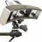
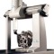
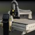
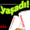
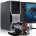
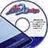
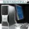
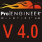

ÇAÐ
CAD/CAM
(26-11-2008) |
Kalite kontrol ve tersine mühendislik için
"high-end" optik tarama çözümü Solutionix ürünleri,
ÇAÐ CAD/CAM güvencesi ve uzmanlýðý ile hizmetinizde... |
 |
Sahibinden
(18-11-2008) |
Satýlýk, çok temiz CNC dik iþleme merkezi (48.000 USD) |
|
Hexagon Metrology
(17-10-2008) |
Hexagon Metrology, Bursa'daki Merkez Ofisi'nin açýlýþ törenini takiben ücretsiz "Açýk Ofis" çalýþmasý yapacak ve herkesi davet ediyor!..
23 Ekim 2008 > Açýlýþ kokteyli,
24-25 Ekim 2008 > "Açýk Ofis" günleri... |
 |
infoTRON A.Þ.
(16-10-2008) |
infoTRON Ürün Geliþtirme Semineri; "Vibro-Akustik Simülasyon ve Yazýlým Çözümleri", 23 Ekim 2008 Perþembe, Ýstanbul |
|
Mekano Teknik
(15-10-2008) |
Gelecek yüksek teknolojide, yüksek teknoloji bizimle...
Ahþap, kompozit, strafor model, plug, kalýp, prototip üretiminde CNC hýzlý iþleme tezgahlarý... Epoxy bazlý model macun dispenseri... |
 |
Anova
(24-09-2008) |
Anova 2008 Kullanýcýlar Konferansý, bilgisayar destekli mühendislik alanlarýnda çalýþan mühendisleri ve akademisyenleri bir araya getiriyor...
7-8-9 Ekim, Bilkent Otel, Ankara |
|
SAYISAL GRAFÝK
(19-09-2008) |
AutoCAD LT'si olan yaþadý!..
Sadece 1.499 Euro ödeyerek AutoCAD 2009 yazýlýmýna yükseltme yapabilirsiniz. |
 |
infoTRON A.Þ.
(17-09-2008) |
infoTRON Ürün Geliþtirme Semineri; "Vibro-Akustik Simülasyon ve Yazýlým Çözümleri", 24 Eylül 2008 Çarþamba, Sürmeli Otel, Ýstanbul |
|
Üçgen Yazýlým
(10-09-2008) |
DELL PRECISION T3400 iþ istasyonu;
Her CAD/CAM'cinin hayali...
Benzersiz performans için týklayýn!..
|
 |
CAD/CAM SoftStore
(29-08-2008) |
Unigraphics için Delik Tablolama Otomasyon yazýlýmýna ÜCRETSÝZ sahip olma fýrsatý... |
|
MTM Bilgi Teknolojileri
(28-08-2008) |
free2Design: Ücretsiz, lisanslý 2D CAD yazýlýmý
AutoCAD ile tam uyumludur
AutoCAD çizimlerinizi doðrudan açar, çalýþmalarýnýza devam edebilirsiniz... |
 |
Yenasoft
(21-08-2008) |
yenasoft.com yenilendi!.. |
|
Bias Mühendislik
(14-08-2008) |
Bias Mühendislik "Test Sistemleri ve Prototip Ýmalatý" bölümü sektörün hizmetine girmiþtir... |
|
RDG Bilgi ve Üretim Tek.
(23-06-2008) |
Plastik ve kauçuk için malzeme, ürün ve kalýp tasarým eðitimlerimiz devam ediyor... |
|
Eksen Müh.
(02-06-2008) |
Ücretsiz MSC.Software SimXpert + MD.Nastran Bilgisayar Destekli Müh. Seminerine davetlisiniz... (09 Haziran, Ýstanbul - 12 Haziran Ankara) |
|
SAYISAL GRAFÝK
(28-05-2008) |
Autodesk sayýsal modelleme teknolojisi tanýtým seminerleri:
29 Mayýs, Bursa - 31 Mayýs, Ankara |
|
3B Dizayn
(28-05-2008) |
Vulcan, döküm prosesleri simülasyonu için güçlü altyapý:
FE Mesh sayesinde; daha kýsa hesaplama süresi ve daha hassas simülasyon sonuçlarý!..
Alçak/Yüksek-Basýnç Döküm, Kuma Döküm, Kokil Döküm... |
|
CAD/CAM SoftStore
(07-05-2008) |
Unigraphics için ÜCRETSÝZ antet hazýrlama otomasyon yazýlýmý!..
Kampanya bitiþ tarihi: 15 Mayýs 2008
|
|
Üçgen Yazýlým
(24-04-2008) |
VERICUT CNC simülasyon teknolojisi - Ankara ve Ýstanbul seminerleri:
29 Nisan 2008 Salý, Ankara - 01 Mayýs 2008 Perþembe, Ýstanbul |
|
Üçgen Yazýlým
(16-04-2008) |
VERICUT Ankara ve Ýstanbul Seminerlerine Davetlisiniz!..
29 Nisan 2008 Salý, Ankara - 01 Mayýs 2008 Perþembe, Ýstanbul |
|
RDG Bilgi ve Üretim Tek.
(09-04-2008) |
Plastik ve Kauçuk - Ürün & Proses Geliþtirme Eðitimlerimiz devam ediyor... |
|
Mikro Sert Metal
(08-04-2008) |
Firmamýz, ürettiði kesici takýmlarda X-PLUS Kaplama ile uygun fiyata yüksek kaliteyi sunuyor... |
|
Üçgen Yazýlým
(03-04-2008) |
is-istasyonu.com > Profesyoneller için üstün performans!
CAD/CAM - ANALÝZ - RENDER...
DELL PRECISION Mobil ve Masaüstü Ýþ Ýstasyonlarý peþin fiyatýna 4 taksit! |
|
ORSASistem
(17-03-2008) |
Dell M4300 Mobil Ýþ Ýstasyonu - 2.2Ghz/15.4'/2GB/NVIDIA Q 512MB
Sýnýrlý Stok - Hemen Teslim!.. |
|
Üçgen Yazýlým
(04-03-2008) |
Haydi korkmayýn... Tezgahýnýzý BÝNDÝRÝN!.. ama sadece VERICUT içinde. VERICUT, dünyanýn bir numaralý CNC simülasyon yazýlýmý...
VERICUT'ýn sanal imalat ortamýnda, CNC iþleme sürecinin simülasyon ve optimizasyonu eksiksiz olarak yapýlýr... |
 |
Üçgen Yazýlým
(29-02-2008) |
VERICUT CNC tezgah simülasyonu yazýlýmý, 5 eksenli tezgahlarýn %100 güvenli kullanýmýný saðlýyor... |
|
Üçgen Yazýlým
(28-02-2008) |
CAD/CAM uygulamalarý için özel olarak tasarlanmýþ yeni nesil DELL ÝÞ ÝSTASYONLARI stoklarýmýzda!..
DELL Precision T3400 Masaüstü ÝÞ ÝSTASYONU ile birlikte
19" Geniþ Ekran LCD Monitör HEDÝYE!.. |
 |
ORSASistem
(22-02-2008) |
Dell M6300 Mobil Ýþ Ýstasyonunda Ýnanýlmaz Fýrsat!
2.4GHz/17inch/4GB RAM/512MB Ekran Kartý... |
|
FÝGES A.Þ.
(21-02-2008) |
Ýþaret Ýþleme ve Haberleþme Sistemlerinin Tasarýmý seminerine davetlisiniz (25 Þubat, Ankara - 27 Þubat, Ýstanbul) |
|
Altar Teknolojiler
(08-02-2008) |
PLANT 4D ve 4D Mechanical Ürünlerinin Tanýtým Semineri (13 Þubat 2008) |
|
Altar Teknolojiler
(08-02-2008) |
Ödüllü Autodesk Inventor Tasarým Yarýþmasý
(Son baþvuru; 7 Nisan 2008) |
|
Ýnformatik A.Þ.
(06-02-2008) |
En iyi CAD/CAM/CAE çözümü, 4.0 versiyonuyla Þimdi daha da kolay ve güçlü...
Pro/ENGINEER Wildfire 4.0 tanýtým seminerlerine davetlisiniz (Manisa, Eskiþehir, Bursa, Ýstanbul) |
 |
ORSASistem
(05-02-2008) |
Yeterince Hýzlý mýsýn? / ORSASistem'den Performans Makineleri (Uygun fiyata DELL Mobil iþ istasyonlarý)... |
|